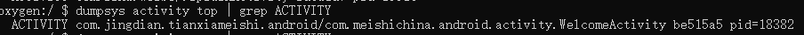
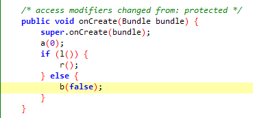
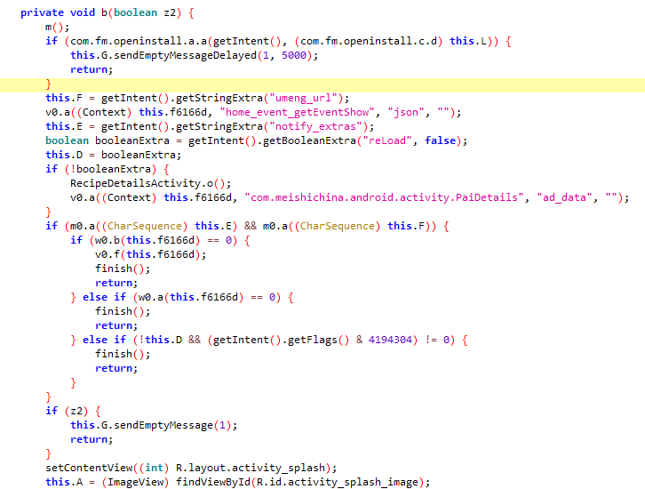

Frida是一款Windows/macOS/Linux/Android/iOS等平台均可用的hook框架，通过JavaSript或Python脚本实现控制。并且能够hook Android的Native层和Java层，很实用。
Frida框架的具体搭建过程可参考之前的文章Hook框架配置备忘录。访问官方文档点击这里。
Frida脚本可以使用Python或JavaScript。Python格式的hook脚本，其主体逻辑部分仍然是由JavaScript写就，示例如下：
1 | import frida, sys |
使用Python脚本hook不同应用时需要将frida.get_usb_device().attach()语句中的参数替换成将要hook的包名。
jscode变量中的内容即hook逻辑。若使用JS格式的脚本，则直接将Java.perform(function){}模块的代码放入js文档执行即可。
因此，我们主要看JS代码部分。
首先，确定要hook的类，通过
var classLoader = Java.use(“com.meishichina.android.activity.WelcomeActivity”);
语句获取该类的对象。
然后，修改目标方法的实现，示例：
classLoader.onCreate.implementation = function(bundle){
this.onCreate(bundle);
}
上一步获取的对象后跟上需要修改的方法名，function()中参数即为方法的参数变量名。若需要执行原方法的逻辑，则调用this.方法名(参数)即可。
若类中由该方法的重载，则需要声明overload，并表明参数，示例如下：
classLoader.b.overload(“boolean”).implementation = function(z2){
console.log(“com.meishichina.android.activity.WelcomeActivity -> b”);
}
若原方法有返回值，那么修改后需要确保方法有相应类型的返回值。
hook构造方法时，方法名为$init，可根据实际需要修改参数类型：
ClassName.$init.overload(‘[B’).implementation=function(param){
//do something
}
frida直接调用内存中已有对象的方法：
2
3
4
5
6
7
8
9
10
11
12
Java.choose('xxx.xxx.xxx '， //这里写类名
{
//onMatch 匹配到对象执行的回调函数
onMatch: function (instance)
{
},
//堆中搜索完成后执行的回调函数
onComplete: function ()
{
}
});
示例：
1 | //这里写方法所在的类名 |
注意：内部类使用smali格式，父类与子类以$相连。
实践
许多应用都有开屏广告，要么浪费几秒钟，要么点击隐晦的跳过按钮，一不小心就会下载一些不需要的APP。能不能跳过开屏广告呢？以某美食APP为例实践一下。
与Xposed框架hook思路一样，首先需要反编译app，找到hook的目标点。
点击应用图标，同时在cmd终端输入命令
adb shell dumpsys activity top | grep ACTIVITY
可以看到当前页面Activity：

用jadx打开apk包，打开此Activity，找到onCreate方法：

条件语句为判断，if中的条件为用户是否同意隐私协议等信息，我们着重关注b(false)。

可以看到首先调用了m()方法，m()中适配了一些机型的快捷方式，略过。然后是一个判断语句，判断为true,就执行this.G.sendEmptyMessageDelayed(1, 5000);语句，意思是延迟5秒发送一个空消息。若为false，就执行后续代码，即接收并在页面中展示广告信息。
那么我们就考虑修改b()方法，直接执行this.G.sendEmptyMessageDelayed(1, 5000);语句。
hook代码如下：
1 | setImmediate(function() { |
打开cmd窗口，执行命令：
frida -U -f “com.jingdian.tianxiameishi.android” -l splashActivity_hook.js –no-pause
可以看到跳过广告窗口直接打开了app。
效果如下：